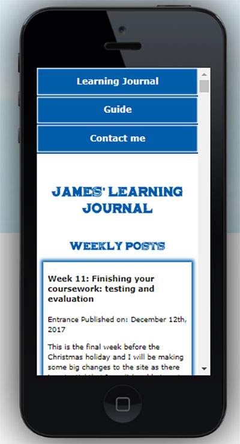
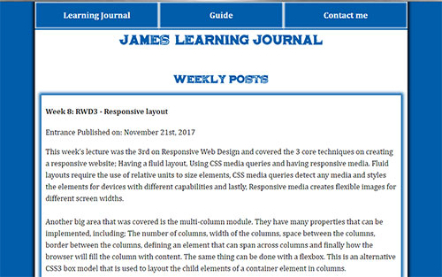

Week 11: Finishing your coursework: testing and evaluation
Entrance Published on:
This is the final week before the Christmas holiday and I will be making some big changes to the site as there is potential that I won't be able to get much done for most of the holidays due to being with family.
Firstly, I will apply the finishing touches to the contact page. This includes making sure that all the inputs work as intended, as well as ensuring that the aesthetics of it are how I want them to be. The biggest part of this is wanting to have the different sections of input clearly marked out, I have previously spoken about this in week 9. Once that is done and the inputs and buttons have been tested, the contact page will be completed. However, there is potential that I will add more features to it if I have the time (Forms, W3Schools).
I will also make sure that all content is spelt correct and that there are no spelling or grammar mistakes. The text should be finished by the end of this week and any images that I still need to gather will be collected and added to the site. I will then get some final feedback from some friends and family to test that the site is appealing and informative.
This is a video of a friend giving her opinions of my site (you could say in a fairly nonconventional way). She also went on to say James' site is visually appealing and contains a lot of interesting content. I enjoy my visit to it!
My Main points to take away from this week are:
Make sure to include all necessary fields to the form.
Make sure I style the contact page form in a way that's easy to use and understandable.
Week 10: CSS position property
Entrance Published on:
In the lectures this week we covered the different types positions that can be implemented into a site. The most important position that I wanted to add was 'fixed' as it would allow me to keep my navigation bar at the top of the screen, even while the user scrolled down the page. I wanted to implement this as it would be a lot easier for the user to navigate the site if they had the option to change pages from anywhere. After adding this, I found that images would display above the navigation bar when scrolling. To fix this I simply had to create a z-index on both the 'img' and 'nav' elements in the CSS. I set the images z-index to 1 and the nav's z-index to 100; this would make sure that the navigation bar stayed above all other content at all times.
Continuing from previous weeks, I have been in the process of changing all pixel dimensions to relative to ensure that the site is responsive in all aspects. This is a must for RWD (Responsive Web Design). Furthermore, I have implemented another RWD feature that makes the site change aesthetically when displayed on a different sized screen. For example, I have made it so that when the site is loaded on a mobile device, the navigation bar is changed so that it displayed one button after the other, descending vertically, rather than being spread across the top of the site. This has been added as smaller screens cannot fit the navigation bar in its normal state.

Here is what the site looks like on a mobile device (pixel width of 320 in css/actual resolution of 640x1136). The site displays entirely how I wanted it to with the navigation bar displaying vertically and all content fitting in without the need of a horizontal scroll bar.
My Main points to take away from this week are:
To make sure that all dimensions are correct, especially when they're converted from pixels.
To use the correct positioning where necessary.
Week 9: HTML and CSS forms
Entrance Published on:
This week I added a form to my contact page. I wanted to make sure that it wasn't too long and only asked for information that was relevant. I decided on the following:
First Name
Last Name
Date of Birth
Email
Comment
Have you been to Brighton before?
If yes, how would you rate your experience?
If no, how likely are you to visit?
I feel as though these options were the best as there aren't too many and they are relevant to the content of the site. They also include various features that come with a form to show that not only do i know how to use said features, but that they can be easily implemented into different types of site. After adding this to the site I wanted to include a box around the first 4 options as they are related to the user's details. I would then add a box around the next set of options as they are more relevant to the user's comments instead of being actually to do with them.
In the lecture we went over all the different types of input and any other elements needed to create a form. Below are some examples of what we looked at:
Input Type
Data Type
Control Type
Text
Text with no line breaks
Text Field
Password
Text with no line breaks (Sensitive information - Each character displayed as a '*')
Text field that obscures data entered
Email
Email Address
Text Field
Date
A date (Year, month or day)
Date Control
Checkbox
Set of values that are displayed as a predefined list
Checkbox
Radio
An enumerated value
Radio button
Submit
An enumerated value that initiates form submission
Button
Button
Has no data type, instead performs an action.
Button
As shown above, I was also able to learn more about creating tables this week, the majority of which I learned from w3schools (Tables, W3Schools.).
My Main points to take away from this week are:
Make sure the correct input type is chosen for each input
Ensure the input options are relevant
Check that the submit and reset buttons work as intended
Week 8: RWD3 - Responsive layout
Entrance Published on:
This week’s lecture was the 3rd on Responsive Web Design and covered the 3 core techniques on creating a responsive website; Having a fluid layout, Using CSS media queries and having responsive media. Fluid layouts require the use of relative units to size elements, CSS media queries detect any media and styles the elements for devices with different capabilities and lastly, Responsive media creates flexible images for different screen widths.
Another big area that was covered is the multi-column module. They have many properties that can be implemented, including; The number of columns, width of the columns, space between the columns, border between the columns, defining an element that can span across columns and finally how the browser will fill the column with content. The same thing can be done with a flexbox. This is an alternative CSS3 box model that is used to layout the child elements of a container element in columns.
In terms of the additions and changes that I made to the site this week. I went through the posts and checked all spelling and grammar to confirm that it was all correct. I decided to do this now as it meant that I wouldn’t have to go through the entire site closer to submission when there would be a lot more content to go through. A final change I made was to the type of referencing that I used, I have updated to Harvard referencing as it seems to be the most effective and useful mode of referencing (Study and Learning Centre, 2005).

This is another progress check for the site, as shown the colour scheme has been added along with the Brighton Pier font. Each article has a border to make it easy to distinguish between them. Finally, the navigation bar is now above the title and is displayed in a horizontal fashion. This layout is also to show another feature that I learned; floating and wrapping. I have floated this image to the left and wrapped the text around it.
My Main points to take away from this week are:
To add fluid multi-column features where necessary.
To make sure that all content that isn't mine is Harvard referenced.
Week 7: RWD2 Flexible Media
Entrance Published on:
This week there was a large focus on making it so that all media in the site is flexible as well as looking over the copyright laws regarding images and videos. There are 3 core techniques that we went over, these were; Having a fluid layout, CSS Media Queries and Responsive Media.
When implementing images, I need to make sure that they are edited to not only be the size I wish it to be on the site but to also be rendered to a good quality and be saved in a compatible format such as JPG or PNG. The images I currently have added to site look good but currently don't have responsive measurements such as 'em', instead they are still scaled using pixels. This is something I need to change soon so the site fits the 'Responsive' criteria.
One thing I discussed last week was that the implementation of the normalize.css had forced some unwanted changes. However, after considering it more, I found that I simply had the stylesheets linked in the wrong order. I needed the normalize.css to be linked first so that it didn’t overwrite any features implemented by the actual stylesheet. This was important as it meant that I could still use borders around the images, as style choice that I prefer to include.
My Main points to take away from this week are:
Optimise images before adding them to the site.
Ensure that the normalize css is linked before my css to ensure that everything works as intended.
Week 6: Introduction to Responsive Web Design
Entrance Published on:
In the lecture this week I learned the basics of how to make a Responsive Website. Firstly, I found that the measurements of the site should be used relative to other aspects of the site; whereas I currently just use pixels to set different sizes for the site. Changing the units of measurement can prove to be a tricky task but if I get the conversions correct, all should be fine!
In terms of implementing new features to the site; this week I added the normalize CSS (Oli Studholme. 2013). This is used to make sure that sites have better cross-browser consistency. When adding this stylesheet, I came across a couple of changes that I wasn't too pleased about but ended up leaving them as from a 'is it functionable?' view, it was the better option. The changes made included taking the border off the images and moving the site to the left. I was able to fix the site sticking to the left without causing problems with the normalize stylesheet but the border on the images I had to leave even though I personally preferred the borders being there.
My Main points to take away from this week are:
Relative measurements should be used in a Responsive Site
The normalize CSS should be used as it allows the site to work correctly across all browsers
Week 5: CSS box model and measurement
Entrance Published on:
This week I spent some time considering how to use different web fonts as last week I had decided on what my guide page would include. I managed to find a font online that is designed after the font on the Brighton Pier (imagex, 2012). This would be a perfect fit for my guide page as it will have a section on the Brighton Pier, as well as the fact that it is also a very nice font on its own. I have also been considering the font options for the general content of the site as the Brighton Pier font will be for the headings. Currently I am between using Verdana and Cambria, both of which are easy to read and would fit well with the site. For now, I will stick with Cambria but this could change further down the line.
Even though I have had prior experience with HTML and CSS, I still learned a few things in the lecture this week that helped me not only remember some important details but also help me learn new skills. These new skills included all the different properties that you can add to a box to not only make it look better but to also make it easier for the user to see/use. The main areas being padding and margin sizes; even though I had used these properties before, I was now able to make sure that they were not only of a good size but also made the site look better aesthetically.
One Final feature that I was able to implement this week was the 'hover' property on images. My aim was to make it so that when you hover over some of the images on the site, the image would grey out slightly (changing the opacity of the image) so that it was obvious that the image would be 'clickable'. Once clicked, a new window would open and take the user to the intended location, whether that would be another page within the site or the site where the image was originally found.
My Main points to take away from this week are:
Always make sure to edit the properties within boxes so that the site looks visually appealing to the user
Include a colour scheme that is not only relevant but is also pleasing to look at
Week 4: Cascading Style Sheets
Entrance Published on:
This week in the lecture and the tutorial I started to consider CSS (cascading style sheets). As said last week I jumped ahead with the CSS aspects of the site as I have had prior knowledge with CSS. However, the syntax and semantics of the language has changed over the years which meant I did have to put some research in over the past week. Going back over the basics did prove useful as I picked up a couple of small changes to the language that I hadn't known before. This include the styling the navigation bar using the list item tags. These tags are usually used as part of a list but can now be used to create a simple navigation bar and can be styled using CSS.
Another feature I added to the site this week was ability to hover over the images, see an opacity change and click the image to see its original source. The CSS for this was simple as all I had to do was make a hover for the image element and make it so that the opacity was 0.5. I thought this feature would be a nice addition to the site as it would be clear to the user that the images go somewhere/do something when clicked as well as it being a nice design/aesthetic addition.
This is a progress check for the site so far (without the updated colour scheme). I have the design decided with the colour scheme just about to be added.
My Main points to take away from this week are:
Make sure that I learn and use all up-to-date syntax
Don't make any features too flashy. Keep it simple
Week 3: HTML Document structure and hypertext
Entrance Published on:
This week I decided to get ahead of the lectures and jump into the CSS portion of the site. I was previously taught how to code in CSS, but the language has since changed slightly which meant I had to do some research into the new syntax/styles I can use in CSS. To help me learn the new aspects I used w3schools, this site helped me a lot to learn the different functions and general syntax of the language. They also gave some helpful examples with easy to follow steps. Using my new-found knowledge, I created a navigation bar (Nav Bars, W3Schools.); this made the site not only look better but easier for the user to get around. However, I did still learn a lot from the lecture and tutorial this week as the new section tags were taught in more detail. I hadn’t previously used any of the new tags such as the article tag. Learning about and using this tag proved to be a lot more useful, not to mention more modern and thus in line with the current rules/syntax.
A final touch to the website this week was the choice of colour scheme. A huge part of Brighton is the Football team that resides here, Brighton and Hove Albion Football Club. Being from Brighton I have seen my fair share of matches, including games in the old Withdean Stadium! From this I got inspiration to use the teams' colours as the colour scheme for my site as not only does it mean a lot to the city, but the colours also look good when used together.
Use a colour scheme that looks pleasing to the eye and doesn't take away from the content
Use up-to-date syntax
Week 2: HTML Markup Basics
Entrance Published on:
During this week I learned more about different types of tags such as 'a', which is an anchor to link one page to another. Inside an anchor tag you can include a 'href' which references another page and connects the pages together, this is most commonly used to link a html page to a Cascading Style Sheet. When using a href, you must make sure to put the value between quotes so that the page/area of the page is properly referenced. Other tags learned include 'ol' and 'ul' which are both lists. A 'ul' is an unordered list where bullet points are used. An 'ol' is an ordered list where numbers are used to list an array of items.
I then learned more about using the correct html syntax, such as; making sure all tags are closed, all tags are written in lower case, all attribute values must be nested in quotes and elements must be nested correctly. Then, I learned a couple of smaller but very impactful tags such as 'strong' (strong), 'emphatic'(em), 'image'(img) and 'line breaks'(br). There are several tags that will be used in essentially all webpages and they are 'header, 'footer', 'nav', 'section', 'article', 'aside' and 'footer'. These tags are used to create different sections of the webpage. For example, the header would be the top of the page and footer would be the bottom.
Use CSS to style the content, don't style anything within the html
Use anchors to create links between different areas of a page
Ensure that all content is properly nested and that the tags start and finish in the correct places
Make sure that when using 'href', the referenced page is spelt correctly and is placed within quotes
I must make sure that when I use an image that it is not copyrighted or that I have the rights to use it
Week 1: Introduction to Web Development
Entrance Published on:
This week’s lecture included detailed information on how to structure our folders for the site along with how to create the html documents to initially start creating our webpages. I then created 3 html documents that had an extremely simple layout but were created to understand the structure and layout of the files and folders behind the website. I then created a heading for each page, so it was easy to distinguish which page was which. A very important lesson learned was the use of the different tags; I had to make sure that all content was within the correct tags. I have currently used the h, p, main, header, article, section, footer and body tags. (HTML Basics. MDN Web Docs.)
Finally, to finish off creating the file structures, I linked each page with each other by giving a reference, or a hyperlink, on each individual page that could link to others. This can be seen at the top of the page. For Example, if you clicked on guide, you would be taken to the 'guide page'. You can then get back here from the guide page by clicking 'Learning Journal'.
My Main points to take away from this week are:
Making sure to set up the folder structure correctly using all lower-case characters to make life easier
Making sure that each webpage is saved in the 'html' format
Put all content that the user sees in the body and anything that is 'behind the scenes' in the 'head' element
It is very important that the document type i declared at the start of the document. In this case it's 'html'
Syntax is the format and rules of use of the language
Semantics is the meaning of the code
Make sure that all the content is within the correct tags. Such as the page title being within the 'h1' tags